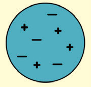
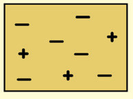
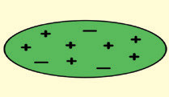

Static electricity
(a) When a glass rod is rubbed with a piece of cloth, what type of charge does the glass rod acquire?
Considering electron transfer, why does this happen?
(b) Describe what happens when an ebonite (or plastic) rod is rubbed with fur.
What charge does the rod gain, and why?
(c) What happens when a charged electroscope is touched with a finger?
What is the name of this process, and how does it work?
Identify those which could become negatively charged for each of the following pairs of materials being rubbed together.
Complete the table by working out the overall charge on each object. Show your calculations. State whether the object is positively charged, negatively charged or neutral and why.
| Object | Overall charge | Why is it positive, negative or neutral? |
|---|---|---|
 | ||
 | ||
 |
(a) The fundamental law of static electricity governs how charged objects behave.
State this law, and provide at least one real-life example or experimental observation that demonstrates it.
(b) Explain how a balloon rubbed against your hair can be attracted to small pieces of paper.
(a) Draw a well-labelled sketch of a gold-leaf electroscope.
(b) How is the electroscope used for testing the types of charges?
If a metal rod is given a negative charge and brought near another neutral metal rod,
(b) If there is a force, will it be attractive or repulsive? Why?
Two rubber balloons are rubbed with hair; will the electric force between one of the balloons and the hair be attractive or repulsive?
Or, will the electric force between the two balloons be attractive or repulsive?
Explain.
State what happens in the following conditions: